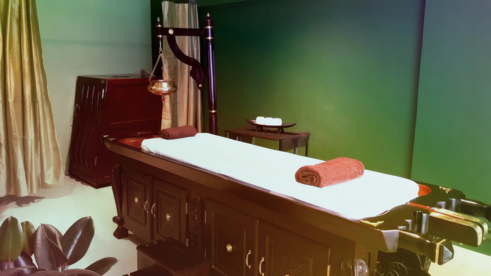
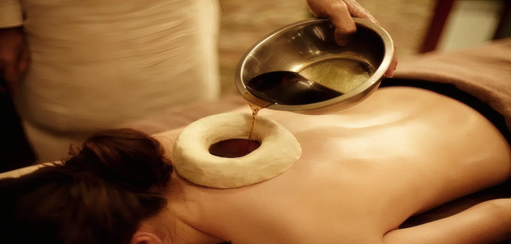
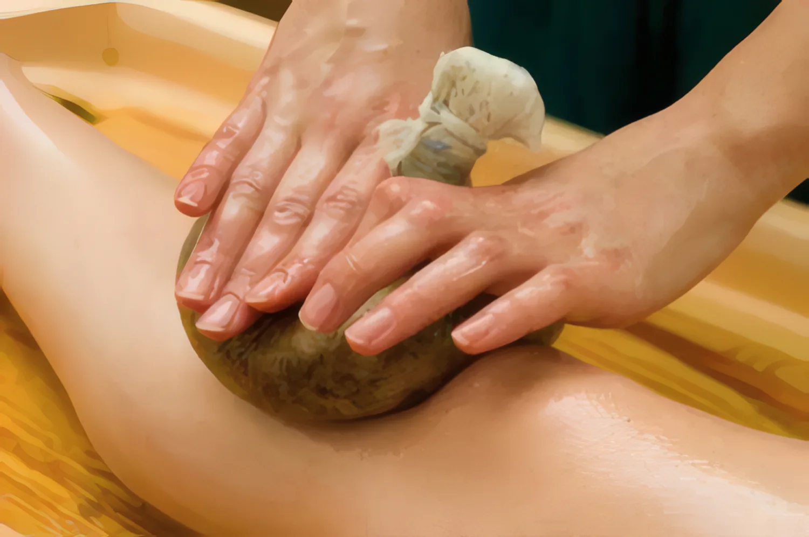
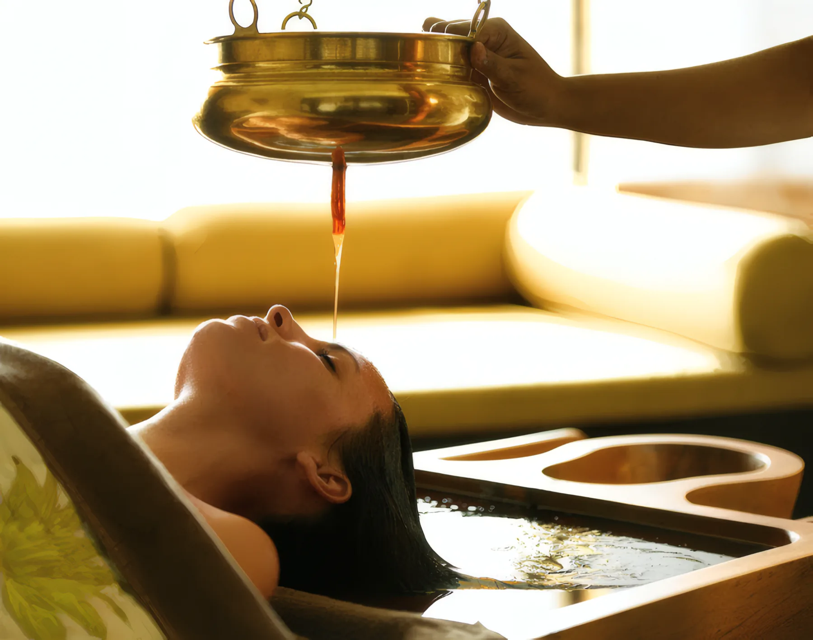
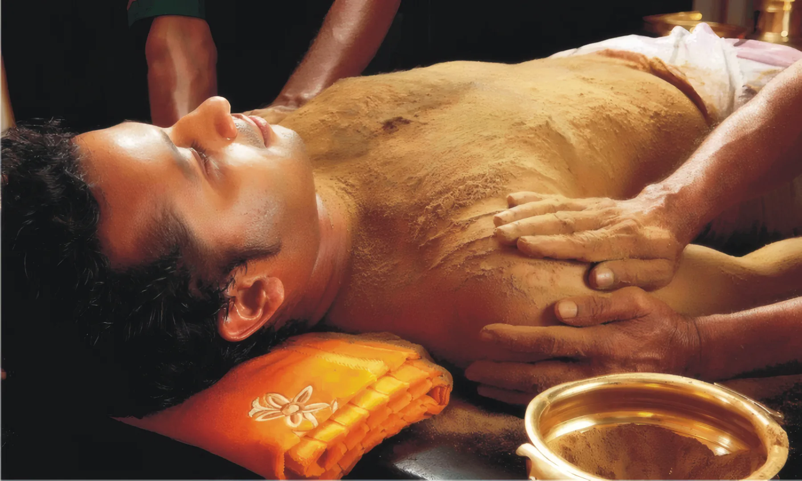
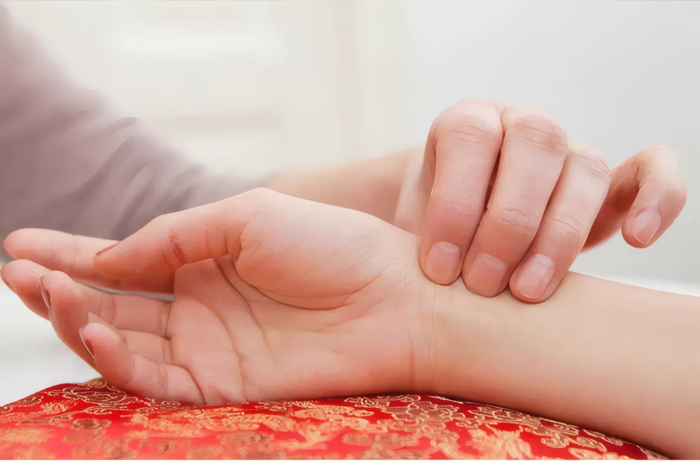
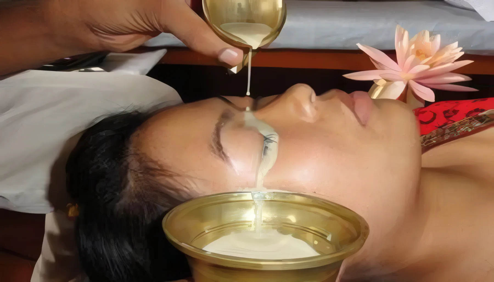
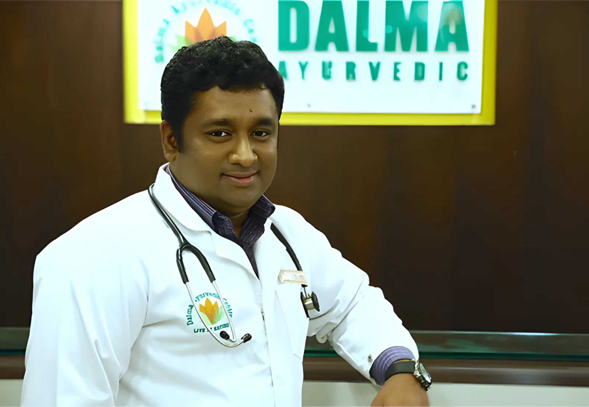
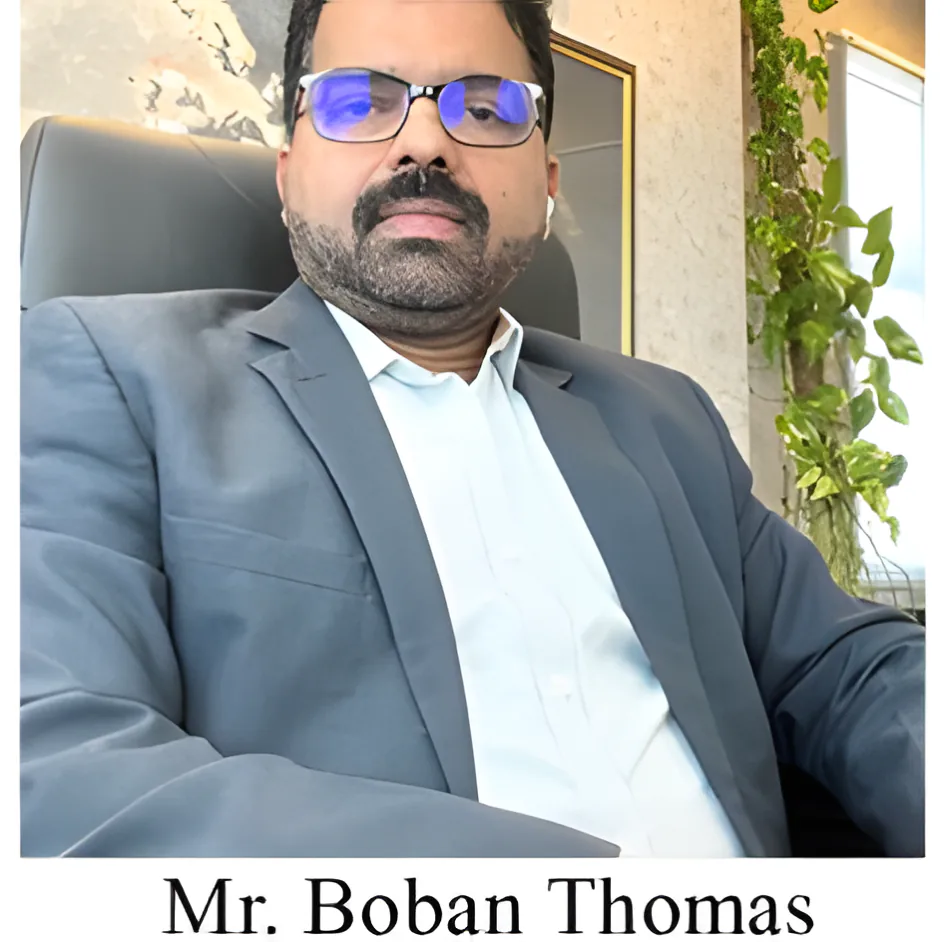

Dalmaمركز دلما للعلاج الأيورفيدي والتأهيل
أيورفيدا كيرالا في الشارقة. يقابلك الطبيب أولاً، يقرأ النبض، ثم يضع لك برنامجاً علاجياً للظهر أو المفاصل أو التوتر أو الوزن أو البشرة. الجلسات يومية في غرفنا بساحة الزهراء.

لماذا يأتي إلينا المراجعون
أخبر الطبيب بما تشعر به وهو يختار العلاج. هذه أكثر الحالات التي نراها، والعلاجات المستخدمة لها عادةً.
01آلام الظهر والرقبةالانزلاق الغضروفي، الديسك، التيبّس
زيت طبي دافئ يُحفظ فوق موضع الألم داخل حلقة من العجين العشبي، ثم تدليك بالصُرر العشبية.
- Kativasthi لأسفل الظهر
- Greeva vasti للرقبة
- Podikizhi صُرر المسحوق العشبي

02الروماتيزم وآلام المفاصلالركبة، الكتف، الورك
صُرر أعشاب مُدفأة بالزيت تُضغط وتُدلّك على المفصل يومياً لمدة 7 إلى 14 يوماً.
- Njavara kizhi صُرر الأرز الطبي
- Elakizhi صُرر الأوراق
- Januvasti للركبة

03التوتر والأرق والصداعباقة إدارة التوتر لمدة 7 أيام
في الشيرودارا ينساب الزيت الطبي بخيط متواصل على الجبهة مع تدليك هادئ لفروة الرأس. نستخدمه للأرق والتوتر والصداع المزمن وضعف التركيز.
- Sirodhara ساعة واحدة، 200 درهم
- باقة إدارة التوتر، 7 أيام، 1,400 درهم

04إنقاص الوزنبرنامج التنحيف لمدة 10 أيام
عشرة أيام من الأودوارتانام، وهو تدليك عميق بالمساحيق العشبية، مع حمية يصفها الطبيب. الالتزام بالحمية جزء من العلاج.
- برنامج إنقاص الوزن، 10 أيام، 1,850 درهم

05بعد الولادةرعاية أيورفيدية للأمهات الجدد
رعاية كيرالية تقليدية للأسابيع التي تلي الولادة، يخطّطها الطبيب حسب تعافيك.
- استشارة الطبيب
- تدليك Abhyanga لطيف
- نصائح الغذاء والعناية في البيت

06إجهاد العينينمن الشاشات والتوتر وقلة النوم
في النيترا تاربانام يُحفظ السمن الطبي فوق كل عين من 15 إلى 30 دقيقة لتخفيف الإجهاد.
- Netra Tarpanam
- Nasya 30 دقيقة، 50 درهم


الدكتور بي. تينو ثامبي
B.A.M.S · كبير الاستشاريين الأيورفيديين
ينحدر من عائلة أيورفيدية تقليدية في كيرالا، وهو ممارس أيورفيدي معتمد من وزارة الصحة. قبل الشارقة أدار مركزه الخاص للبانشاكارما في الهند.
- الدراسةبكالوريوس الطب والجراحة الأيورفيدية، 2002، مومباي
- أكثر ما يعالجهآلام الظهر والرقبة المزمنة، مشاكل البشرة، التوتر، أمراض نمط الحياة
- أيضاًالعقم عند الرجال والنساء، برامج البانشاكارما

الأسعار
من قائمة أسعارنا الحالية بالدرهم. نؤكّد السعر بعد الاستشارة وقبل بدء أي علاج.
شركات التأمين التي نتعامل معها
أحضر بطاقة التأمين، ونتحقق من تغطيتك في الاستقبال قبل بدء العلاج.
- Daman
- ADNIC
- AXA
- Bupa
- Neuron
- NextCare
- Mednet
- Almadallah
- Oman Insurance
- Orient Insurance
- Salama
- Takaful
- Al Fujairah National
- NGI
- Qatar Insurance
- AIG
- Zurich
- RSA
- MetLife
- Tokio Marine
- Aetna
- Amity
- SAICO
- New India Assurance
- Oriental Insurance
غير متأكد من تأمينك؟ أرسل صورة البطاقة على واتساب ونتحقق لك.
موقعنا
مفتوح الآنبناية الزامل، ساحة الزهراء، الشارقة
قرب مستشفى الزهراء وبرج الساعة. ص.ب 77302.
| السبت | 9 ص – 10 م |
| الأحد | 9 ص – 10 م |
| الاثنين | 9 ص – 10 م |
| الثلاثاء | 9 ص – 10 م |
| الأربعاء | 9 ص – 10 م |
| الخميس | 9 ص – 10 م |
| الجمعة | 9 ص – 9 م |